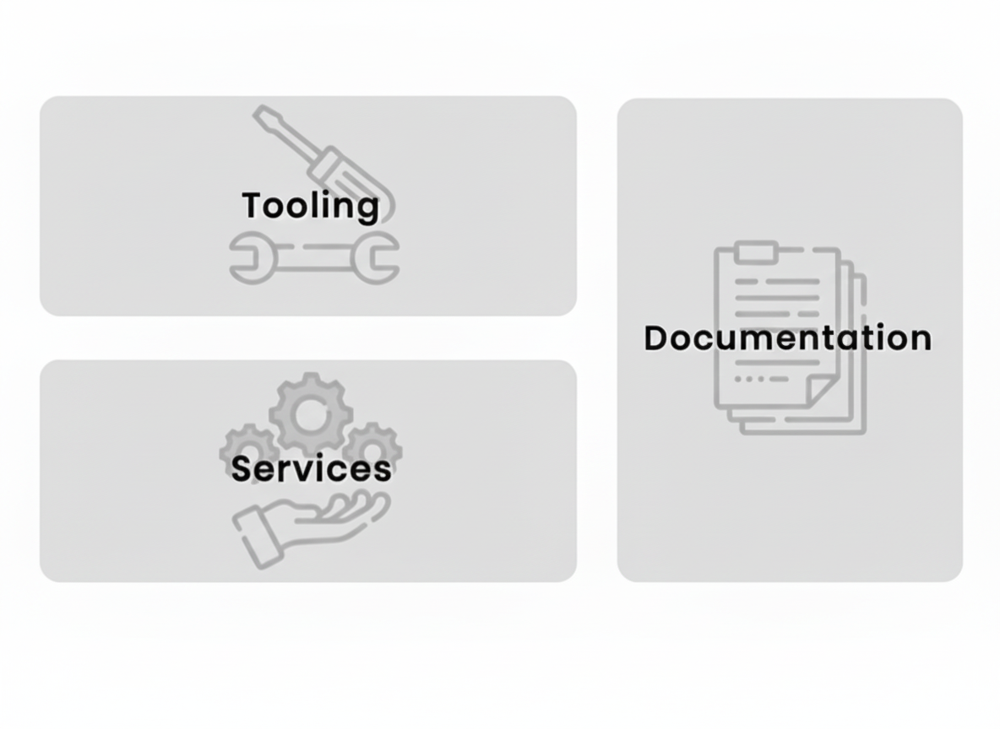
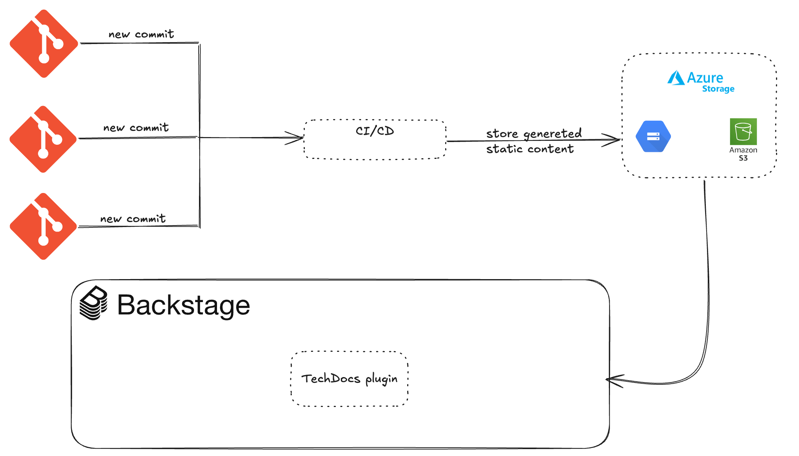

🚧 Documentation dispersée
(Confluence, Notion, README Git)
🔄 Dérive entre code & documentation
(Non synchronisée)
🚧 Difficulté d'accès pour les devs
(Freinant la productivité)
Répertorie les différents composants des projets internes d'une société ou d'un département.
Recense les documentations ainsi que les API et les relie tous entre eux.

Plugin officiel Backstage
Génère une documentation statique à partir de Markdown
Docs versionnées dans le repo du composant

Objectif : montrer de l'import d'un composant -> visualiser TechDocs dans Backstage -> modifier et re-générer
# mkdocs.yml
site_name: Mon Service
nav:
- Accueil: index.md
- API: api.md
# catalog-info.yaml (extrait)
metadata:
name: mon-service
annotations:
backstage.io/techdocs-ref: dir:./docs
# Exemple local / git git clone git@github.com:org/mon-service.git cd mon-service # éditer docs/index.md git add docs/index.md git commit -m "Ajout intro TechDocs" git push # Si vous utilisez Backstage local cd backstage yarn dev # Extrait CI (pseudo) - name: Build TechDocs run: mkdocs build -d site - name: Upload to S3 run: aws s3 sync site/ s3://bucket/mon-service/
Intro 3' — TechDocs 5' — Setup 5' — Démo 6' — Bénéfices 1' — Q&A 2'